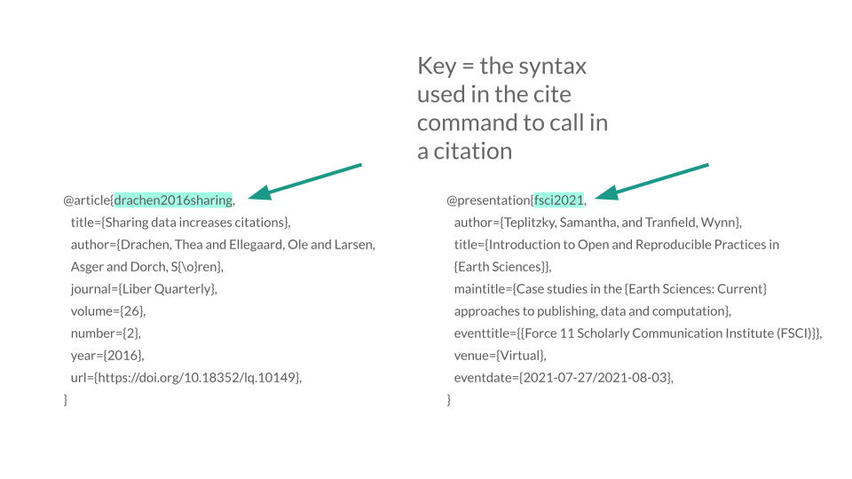
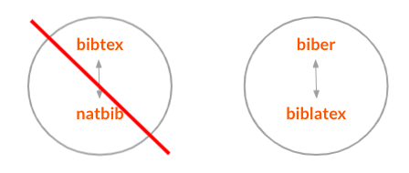

CV Workshop
Contents
CV Workshop#
Take your curriculum vitae to the next level with LaTeX#
LaTeX Basics#
Introduction#
LaTeX is a typesetting system that allows you to focus on your content instead of formatting - formatting is done separately from entry.
You tell LaTeX “what it is” not “how it looks.”
LaTeX using Overleaf#
Create documents via a cloud based account
Source code or rich text format
Collaborating and sharing documents
Versioning and track changes
Templates for a variety of documents and publishers
Link with other tools in your research workflow
Pro account with your berkeley.edu address
Example#
Look at the template below to get a sense of how Overleaf works. On the left side, the content is written in LaTeX. On the right side, the rendered document.

Structure of a document#
Term |
Description |
Example |
|---|---|---|
Command |
Control sequence which performs an action |
|
Preamble |
Block of commands that define the type of document you are writing, the language you are writing in, the packages you would like to use. Comes before \begin{document} |
|
Package |
Enable you to create bibliographies, insert images and figures, and write formulas. |
|
Environment |
Block of code with specific behavior depending on its type |
|
Body |
Content of document enclosed inside an environment |
|
Note
Comments: Use % to create a comment. Nothing on the line after the % will be typeset.
Restricted Characters: Certain symbols require a backslash to appear, like $, &, #, and %.
Basic Commands#
Bold:
\textbf{example}Italics:
\textit{example}Underline:
\underline{example}
Lists#
Use the \begin{itemize}...\end{itemize} environment to create unnumbered lists, useful for detailing job responsibilities or committee service.
Use the similar \begin{enumerate}...\end{enumerate} environment to create numbered lists.
Exercise#
Exercise 1: Copy a Template
Objective: Learn to adapt and edit a LaTeX CV or Resume Template.
Visit Overleaf’s gallery of CV templates to get a sense of the formats and discipline-specific variations available.
In this workshop, we will use a template titled [Scismic’s Recommended CV Template for Biotech and Pharma Jobs] (https://www.overleaf.com/latex/templates/scismics-recommended-cv-template-for-biotech-and-pharma-jobs/hbnkjrjnnpjz)
Choose the option: OPEN AS TEMPLATE
Click Menu → Copy
In pop up box, enter the name of the new project, then click Copy.
Hint
Consult Overleaf’s help site for more information about creating a project from a template.
https://www.overleaf.com/learn/how-to/Creating_a_project_from_a_template
Questions?
Compare your LaTeX code to the template to troubleshoot.
Edit document#
In the next section we will experiment with making edits to the document and troubleshooting any issues that arise.
Exercise#
Exercise 2: Edit the document
Objective: Experiment with making simple edits and recompiling the document to troubleshoot.
Make edits on left
Replace “Name” with “Your Name”
Replace “Scientist 1” with “Your Title”
Replace “Research Experience” with your preferred subheading.
Render document on the right
To see changes, click “Recompile”
Experiment with additional edits under “Professional Experience”
Add task or accomplishment using \item command
To see changes, click “Recompile”
Hint
Look for \begin{itemize}
Results
This is how your rendered exercise should appear in Overleaf.

Publications Lists and Bibliographies in LaTeX#
Objective: Learn the basic commands to create and edit a list of publications and presentations within a bibliogrpahy file
Getting started with a .bib file#
In order to include in-text citations and a bibliography, the document needs to refer to a .bib file.
There are three ways to include a .bib file in a project in Overleaf.
Upload your own .bib file that you create or export from a citation manager.
Link to a URL (.bib)
Connect your Overleaf account with Mendeley or Zotero.
If you are working in a traditional LaTeX editor, locate the .bib file in the directory.
What does a citation in a .bib file look like?#

The top line following @ is the “key” which is the syntax you use to add the citation to your document. Your citation is only as good as its underlying data, so if something is misspelled or if you are missing a field in the .bib entry, errors will propagate. For example, if you would like to add a doi or url, you’ll need to add to the .bib entry in order for it to appear in the citation.
Bibliography Packages#
LaTeX uses two common packages to generate in-text citations and bibliographies.
natbib: works best with author-year citations and numerical citations. This package works well for simple, short bibliographies, but is not supported and less commonly used.
biblatex: the most flexible package for generating citations and the package that will be referred to in this document. We will use biblatex in this workshop.

Commands required for the preamble:
\usepackage[backend=biber,style=apa]{biblatex}
The above syntax calls in the biblatex package and the backend (biber), which acts as the interface between the .bib file and the LaTeX document. “Apa” denotes the citation style. This can be changed accordingly.
\addbibresource{example.bib}
The above command calls in the .bib file, which has the citation information for in-text citations and the bibliography.
In an article or book chapter, the command \printbibliography inserts the bibliography, which will contain citations referenced in the text. We will take a slightly different approach in adding references to a CV.
Find more information here: https://www.overleaf.com/learn/latex/Bibliography_management_in_LaTeX
Exercise#
Exercise 3: Adding a Bibliography
Objective: Learn to create, edit or upload a .bib file, use basic citation commands, and display a bibliography.
Create a .bib file and add references
Create a new file within your Overleaf project (click on the paper icon in the upper left) and name it CV_references.bib
{kind=link}
Search for this article in Google Scholar and locate the BibTeX formatted citation.
10.1080/15420353.2022.2080790
You can type a .bib entry from scratch, but it’s much easier to export the details from a database. Another option - if you have a Google Scholar profile, you can export your publications list as a bibtex file and then upload it or paste the contents into your Overleaf project.

Paste the citation within your .bib file. (No preamble is needed).
Adding a bibliography
To display bibliography in APA style, add package and style command to preamble:
\usepackage[backend=biber,style=authoryear]{biblatex}
\addbibresource{CV_references.bib}
Citation commands
Use the following commands to insert a publication into your CV.
\section{Publications}
\subsection{2020-2021}
\begin{verse}
\fullcite{teplitzky2021introducing}
\end{verse}
Tips: Use subsections to group works by theme or date. Change font color or highlight text to identify particular articles or presentations.
Commands needed: \fullcite{}, \section, \subsection, \begin{verse}...\end{verse}
For additional examples and more information, please visit Overleaf’s page on bibliography management in LaTeX